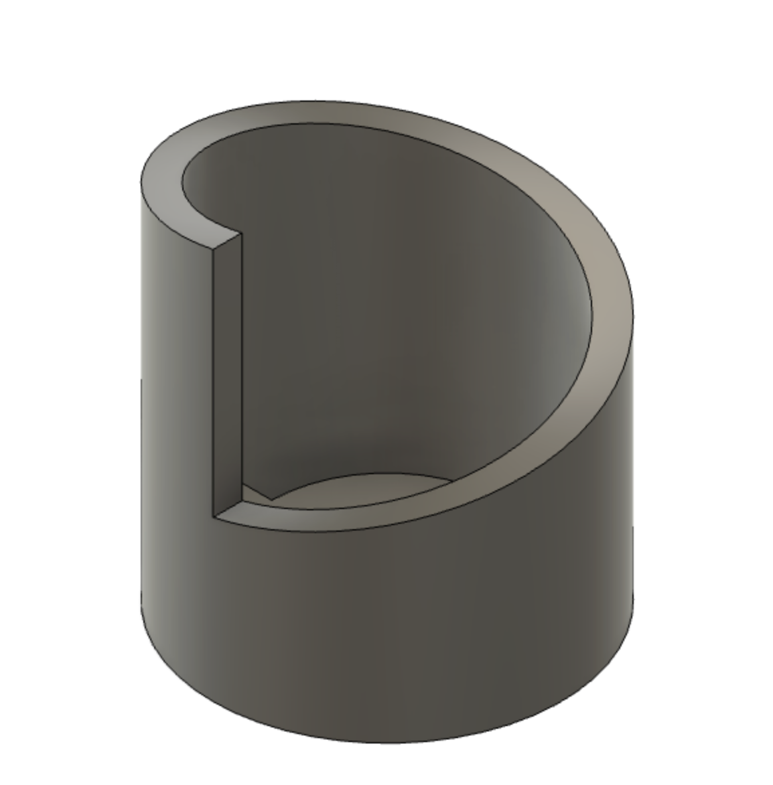
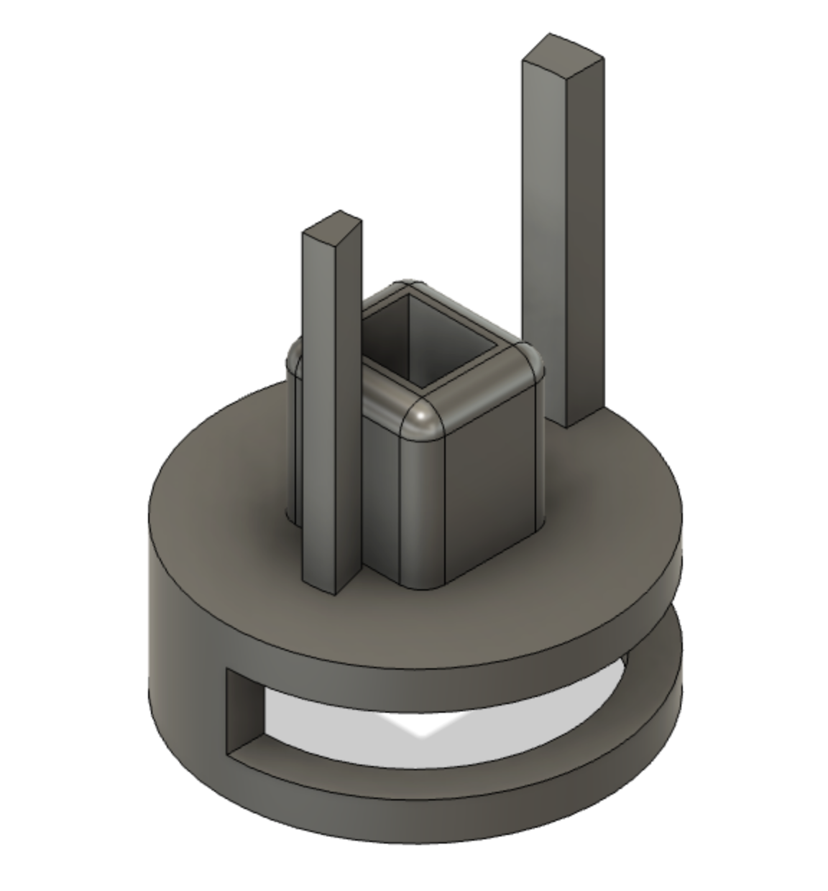
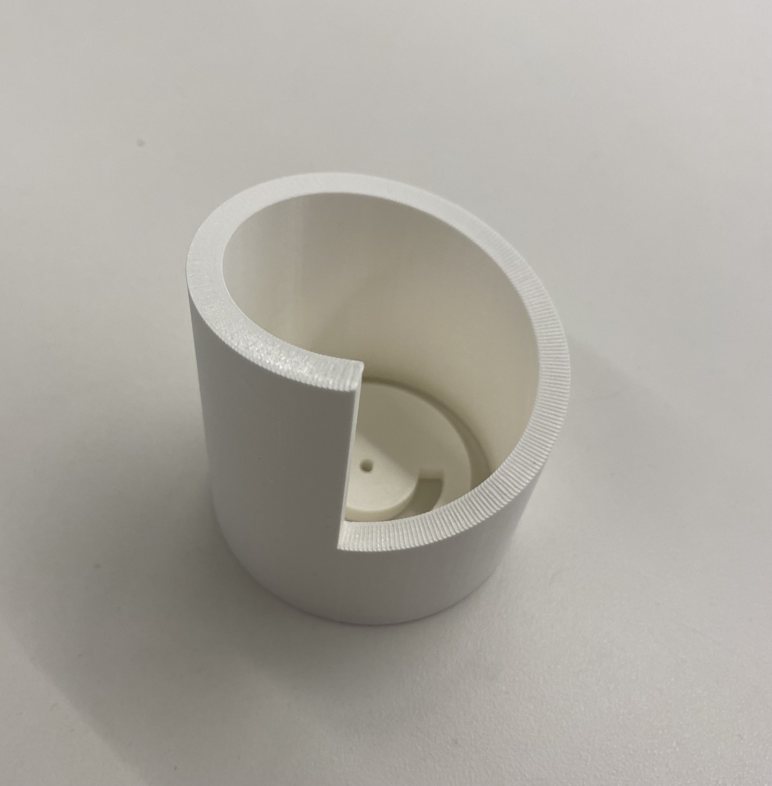

### Microcontroller Programming
## Concept & Inspirations
I chose to continue my project from last week, a figure inspired by the myth of Apollo and Daphne, who turns into a tree in front of your eyes. In addition to remaking the sculpture and mechanism, I incorporated a distance center so that the figurewould turn into a tree when an observor approached, placing the observor in the role of Apollo.
## Design Process
Before I even got to incorporating my distance sensor, I wanted to redo the physical mechanism of the sculpture. I came up with a new design, in which a mor would spin a circular ramp, lifting a sheet of tree trunk up and covering the stationary figure inside. Although I know this won't look exactly like the figure turning into a tree, the concept of avoiding sight and touch will still be communicated.
I chose to use 3D printed parts this week, as I felt it would help me avoid the fairly haphazard appearance of last week's sculpture and also make sure everything fit together precisely.


